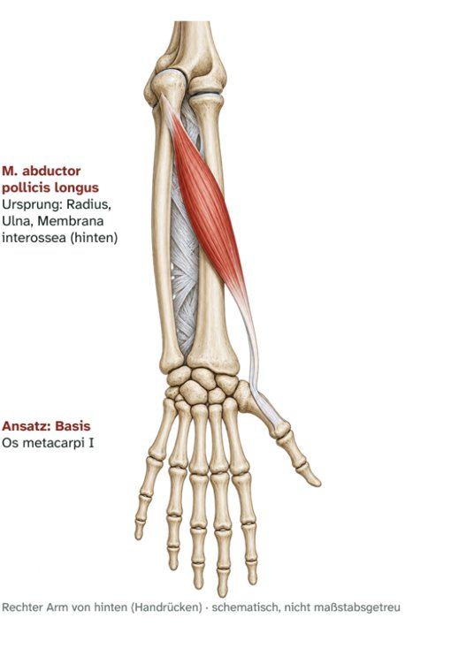

Unterarm hinten · tiefe Schicht
M. abductor pollicis longus
Langer Daumenabspreizer – Ursprung, Ansatz, Innervation und Funktion
Zu diesem Muskel gibt es noch kein eigenes Video.

Steckbrief
Steckbrief
- Ursprung
- Hinterfläche von Radius und Ulna, Membrana interossea (obere Hälfte)
- Ansatz
- Basis des Os metacarpi I, Os trapezium
- Innervation
- N. interosseus posterior (C7–C8)
Funktion
- Daumen: Abduktion im Daumensattelgelenk.
- Handgelenk: unterstützt die Radialabduktion.
Zum Lernen

E-Book · Band 2 · 19,90 €
Muskel-Atlas Schulter & Arm
Im E-Book findest du zu diesem Muskel außerdem:
- Merkhilfe und typische Prüfungsfalle
- Muskelfunktionstest, Längentest und Übungen per Video-QR-Code
- Dehn- und Kräftigungsübung
- Kurz-Check mit drei Fragen und Lösungen
Weitere Muskeln: Unterarm hinten und radial: Strecker
- 28VideoM. brachioradialisOberarm-Speichen-Muskel · Unterarm hinten und radial: Strecker
- 29VideoM. extensor carpi radialis longusLanger speichenseitiger Handstrecker · Unterarm hinten und radial: Strecker
- 30VideoM. extensor carpi radialis brevisKurzer speichenseitiger Handstrecker · Unterarm hinten und radial: Strecker
- 31VideoM. extensor digitorumFingerstrecker · Unterarm hinten und radial: Strecker
- 32VideoM. extensor digiti minimiKleinfingerstrecker · Unterarm hinten und radial: Strecker
- 33VideoM. extensor carpi ulnarisEllenseitiger Handstrecker · Unterarm hinten und radial: Strecker
- 34VideoM. supinatorAuswärtsdreher · Unterarm hinten und radial: Strecker
- 36TextM. extensor pollicis brevisKurzer Daumenstrecker · Unterarm hinten und radial: Strecker
- 37TextM. extensor pollicis longusLanger Daumenstrecker · Unterarm hinten und radial: Strecker
- 38VideoM. extensor indicisZeigefingerstrecker · Unterarm hinten und radial: Strecker